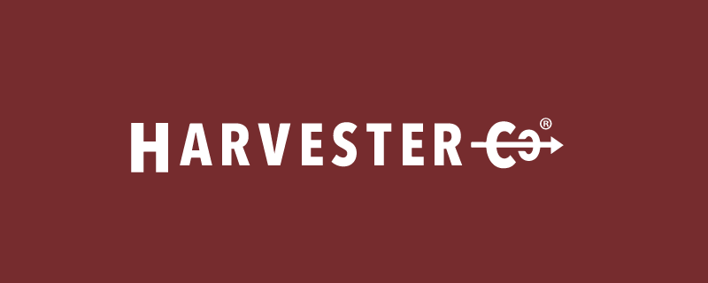
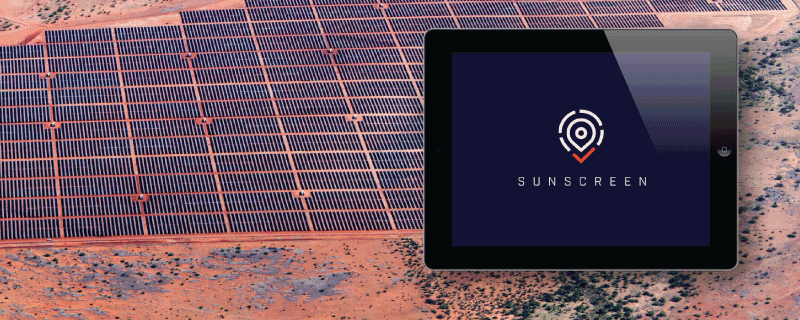
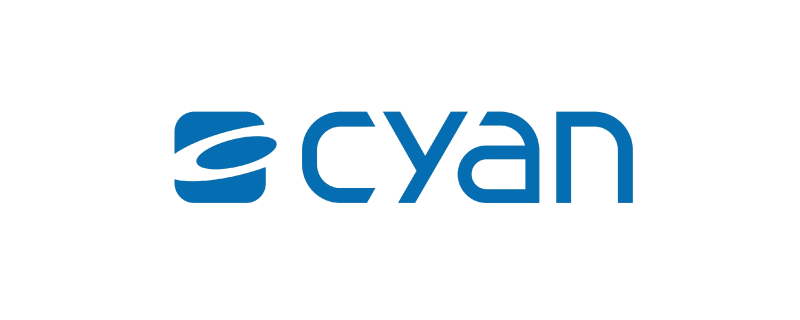
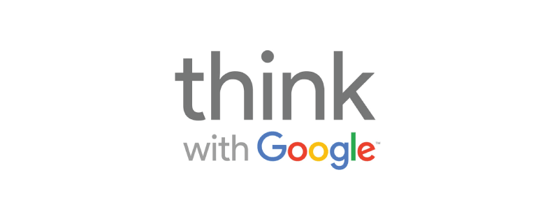

Core Tenants
Transparency
We believe that being transparent is part of good communication and that if
you do good work and care about your customers, transparency is a natural
result of that relationship. We are transparent about our pricing, how we
work and just about everything else.
Craftsmanship
We believe quality software stands the test of time. We care about the work
we do and take pride in building software that is well made, resilient, maintainable
and tested. We think about all the little details and make sure all the “i”s
are dotted and the “t”s are crossed. If you care about building a business
that lasts, the details matter a whole lot.
Communication
Without clear, effective and timely communication, you can’t build great software.
That is why communication is at the core of what we do here. From our weekly
meetings to our regular stand ups to our collaborative code review, we focus
on making sure all those involved in a project have a full understanding
of their role, what’s expected of them and when things are to be done.
We accomplish this with various tools and techniques that you will become familiar
with when working with us. As a client of ours, you’ll never be left high
and dry with a developer that just drops off the face of the earth.
Team
BIG is owned by Dana Woodman, a veteran software developer, speaker and entrepreneur.
Dana has been an artist and software developer since before middle school.
He combines an eye for design, an obsession with quality and a knack for
business together to solve problems in a pragmatic yet thoughtful manner.
He founded Sonoma County's first nonprofit community arts and makerspace, Chimera,
and has taken it from an idea to an active, thriving community. Dana also
co-founded Hack Sonoma County, Sonoma County's most active software development
meetup group, NorCal.js Sonoma County's only JavaScript focused meetup group
and Startup Sonoma, a private network of Sonoma County startup founders.
He has given talks on software (React, OpenSCAD, JavaScript, Ruby on Rails,
Go, etc), entrepreneurship and making.
Dana grew up in a creative family; his mother is a professional jeweler and
YouTube educator and his father is a professional woodworker.
A network of talent
At BIG, we have a broad network of creative professionals including web and
mobile developers, UI/UX designers, copyrighters, and marketing/sales experts.
Chances are, if your business needs help in a particular area, we can help
assemble the perfect creative team.
How We Work
Agile development process
At our weekly “Sprint Meeting”, you will have a chance to review progress from
the previous week, help us to plan the next "sprint" and make adjustments
to the flow of the project as needed.
Decide a certain feature is no longer needed? Want to add something? Want
to dedicate more/less resources to the project? No problem, we will
just make adjustments for the next sprint.
Test driven software design
Quality software is tested and verified. You can never truly have confidence
(and thus a good nights sleep) if you can’t verify that the software you
have is tested and that the most recent changes you’ve made didn’t break
anything.
Using Test Driven Development (TDD), Continuous Integration and Continuous
Deployment we create a system that ensures we launch high-quality, well tested
code quickly.
Peer review
All changes that are made to your project will be peer reviewed by a senior
developer to ensure that the changes made are done in the best possible way.
Research has continually shown that code review is one of the most important
factors in creating (near) bug-free software.
Every sprint ends with a “Pull Request” (basically an isolated change to the
software) that will be reviewed by another developer to give feedback on
the particular solution and possible alternative approaches, ensuring testing
and documentation were updated and that the code follows the style guidelines
for the project. This process ensures every change is as well thought out
as possible, thus making the best possible software.
Maintainability by design
Software projects are complex and the people working on them change over time.
To ensure this predictable change is as painless as possible, we document
our projects so the onboarding of new developers (or if you so choose, moving
to another company) will go as smoothly as possible. In addition, we strive
for software that is legible, concise and clear so that any reasonably experienced
developer can quickly make changes with confidence.
Our Past Work
Bonafide: Product Redesign
Bonafide brought in BIG to modernize their application frontend. They are
one of the biggest and most established players in their space and have
been around for many years so they developed a lot of technical debt in
the frontends, including many different interface versions throughout the
application. BIG worked with their team to design and implement a new and
improved User Experience focused on reducing the time and energy needed
for users to find the information important to them. Our team created a
new UI aesthetic and developed frontend components using React to incrementally
improve their product.
View company website

Harvester: Job Master
Developed a system to manage the internal production process of Harvester,
a local t-shirt print shop. The application allows designers to review
and approve production runs of print jobs and production staff a reference
and workflow to ensuring accurate and consistent printing.
View company website

Swinerton Builder: Sunscreen
Swinerton Builders is one of the largest solar power plant contractors in
the United States. Sunscreen is a tablet application that completely removed
the need for Swinerton's team on contractors to use huge stacks of paper
blueprints on the job site and made managing, tracking, and reporting drastically
easier for their team.
BIG was hired to assist in developing the web interface for their new site
management platform. The existing version of the interface wasn't ready
to support the real-time nature of the information flowing through the
system, so we developed a framework of UI components using React and Redux.
View company website
Sisyphus: The Kinetic Art Table
Developed a React Native mobile application and oversaw project management
for a successful crowd-funded kinetic art piece. The project raised $1.9mm+
on KickStarter. Myself and another developer who worked on the embedded
API server, developed the project from idea all the way to its successful
funding on Kickstarter including initial brainstorming, iterative MVP creation
and marketing. The mobile application allows an owner of a Sisyphus table
to control speed and brightness, change pattern playlists and pause/resume
movement; similar to a music player in functionality.
View website
Hydroponic Research: Nutrient Calculator
We worked closely with a local agency, ZDCA, to develop a nutrient calculator
widget for VEG+BLOOM's new Shopify website. We leveraged React to create
a performant, reliable and beautiful calculator that determines the proper
product amounts and recommended product types based on a variety of criteria.
View the calculator
Zovida: Learning Management System
Zovida is a modern twist on traditional Learning Management Systems (LRS).
We worked directly with the business founder from the original ideation
phase into it being sold to its first customers. BIG oversaw one other
developer on creating an MVP using Node of a standard LRS review/quiz/survey
flow. We managed to keep the initial project simple and sold the initial
concept to a customer with over 1700 employees who was onboarded seamlessly.
We built just enough functionality to enable our client to save on costs
while still attracting clients and being flexible for the future.
Working closely with founder Parker, we built a fully tested application,
delivered in less than 6 weeks, on budget and on time.
View company website

Cyan: Bandwidth-on-Deman
Built a bandwidth management interface to allow customers of Cyan (AT&T,
Verizon, etc) to be able to offer their clients the ability to manage and
control their bandwidth usage and services, on-demand. Integrated with
Cyan’s JSON API and their existing tooling and development processes.
View company website

Vendini: Event Manager
Part of a three-person team developing their live event management system.
The system managed zone and time based access control using RFIDs wristbands,
real-time dashboards for access monitoring and management and order search
tools. Built a web-based order printing system that handled printing labels
and updating orders of 20,000 tickets direct to a label printing machine.
The system communicated directly with the Vendini API with bi-directional
syncing and communication of event/ticketing data.
View company website

Google: Think with Google
UX design of mobile application for event discovery including conference
schedule, in-app messaging and a popular “Meet Someone” feature. Developed
Ruby on Rails backend API that the Android and iOS applications communicated
with including managing event schedule, monitoring usage and access control.
Took from concept to product in two weeks.
View company website
Comcast: Send-to-TV
Worked closely with Comcast Labs team to create a portal site for their new
X1-enabled televisions “Send to TV” feature. Took design comps and created
responsive, multi-device pages integrated into a Node.js backend with heavily
customized behavior depending on device type.
View company website
PersonalizationPop: Shopify Addon Product
PersonalizationPop offers a one of a kind fully automated way to add, sell
and fulfill personalized products for your Shopify store. With a click
of a button you can add from one to 10,000 products in hundreds of categories
to your online store, instantly!
Working with founder Ramin, BIG built a Shopify application in under 6 weeks
from idea to first paying customers. Worked directly with the business
owner to develop an MVP based on real customer needs, not perceived ones.
Developed in an agile, iterative fashion to keep costs low and the product
focused.
View company website